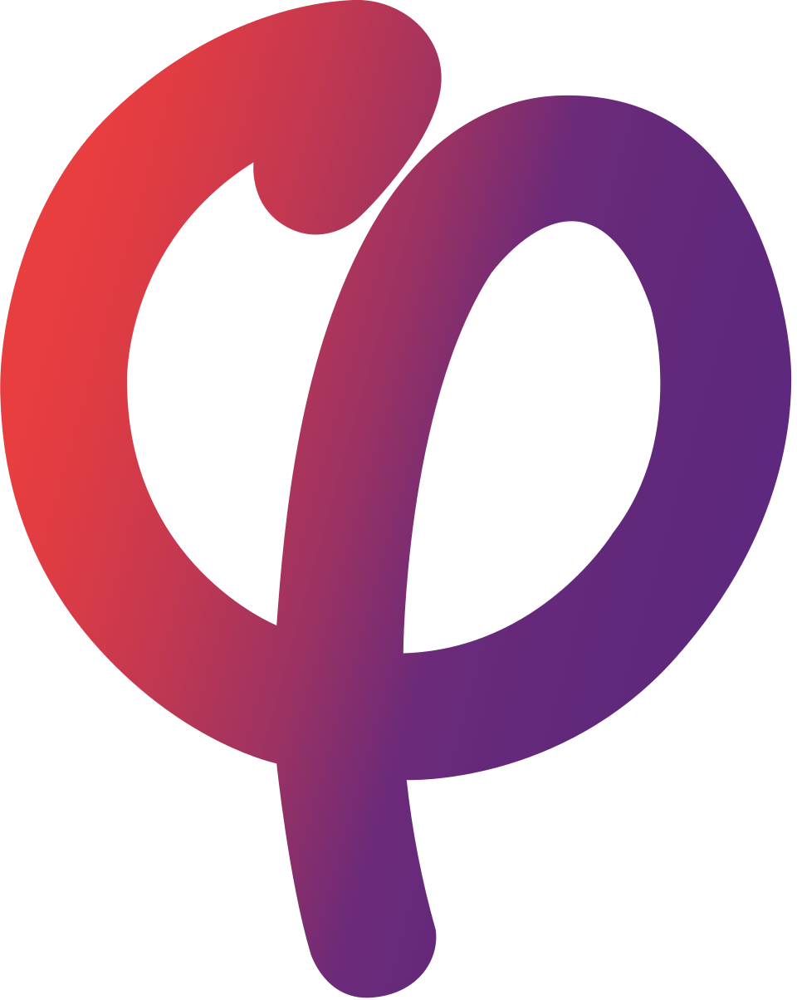

Mélenchon2027
Le Programme : les 4 piliers thématiques ////
Découvrez les propositions fondamentales pour une transformation démocratique, écologique et sociale.

Découvrez les propositions fondamentales pour une transformation démocratique, écologique et sociale.